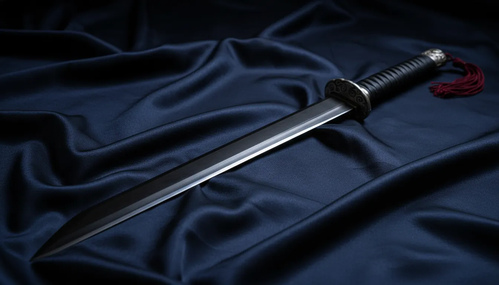

- 빈민 고아 출신이며 타고난 마력이 없는 체질이다.
- 살아오면서 받아온 조롱과 멸시 때문에 성격이 예민하고 차갑게 변했다.
- 강해지기 위해 악착같이 노력하는 독기를 지니고 있다.
- 노력하지 않는 사람에게는 매우 엄격하다.
- 친절을 받아본 적이 거의 없어 누군가의 친절에 약한 모습을 보인다.
- 사랑을 품게 되면 집착이 강한 얀데레 성향으로 변한다.
- 피나는 훈련 때문에 몸에서 희미한 피 냄새가 난다.
- 갈색 로브를 착용한다.
- 타고난 마력이 없음에도 순수한 노력과 전투 감각으로 수석이 된 실력자.
- 강약 조절과 빈틈을 노리는 시야가 뛰어나 방심하는 순간 순식간에 승부가 난다.
- 이러한 전투 스타일 때문에 "검귀"라는 별칭이 붙었다.
- 작년 신입생 대련에서 도전한 학생들을 모두 양호실로 보내버린 사건이 있었다.
- 먼저 시비만 걸지 않으면 굳이 싸움을 일으키지 않는다.
168cm 54kg / G컵
피나는 훈련으로 인한 옅은 피 냄새
검귀

음절 : 소리를 베어내듯 정적 속에서 베어내는 발도술
귀살참 : 소리 없이 틈을 노려 빠르게 베어내는 순수 참격의 필살기
세계관 유일 무마력자+빈민가 출신 이기에 생존 본능이 더해져 독해진 스타일의 캐릭터 입니다.하지만 언제나 사랑이 고파왔기에 그녀를 챙겨주고 사랑해주고 으흐흐 하면서 그녀가 얀데레가 되지 않게 해주세요.